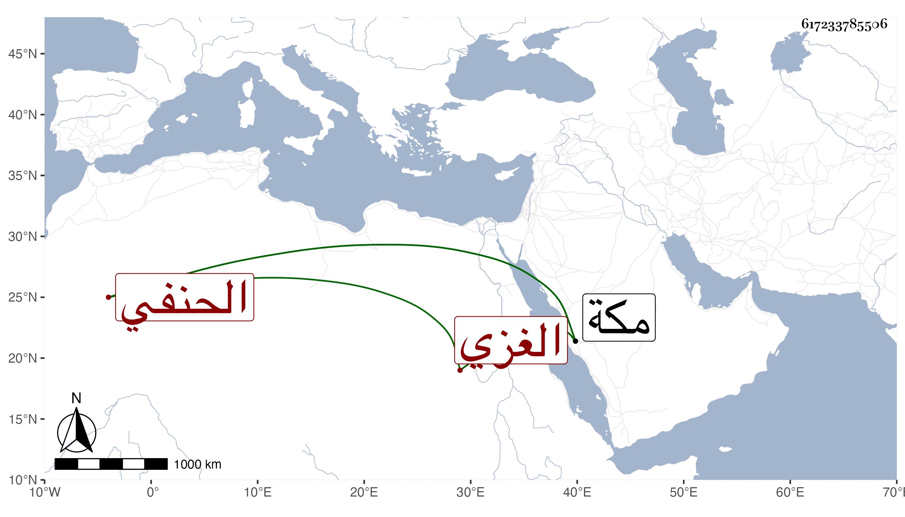

0902Sakhawi.DawLamic.ITO20230111-ara1.EIS1600.617233785506
Biography ID: 617233785506
116
أحمد بن علي بن محمد الشهاب الغزي الحنفي نزيل مكة من أصحاب يحيى الواعظ . قرأ علي في سنة ثلاث وتسعين أربعي النووي ثم في التي تليها بعض البخاري ولازمني فيهما وهو ممن قرأ بمكة على المحب بن حرباش في الفقه وعلى عبد الله الشامي في النحو ، وفيه سكون وجمود .
